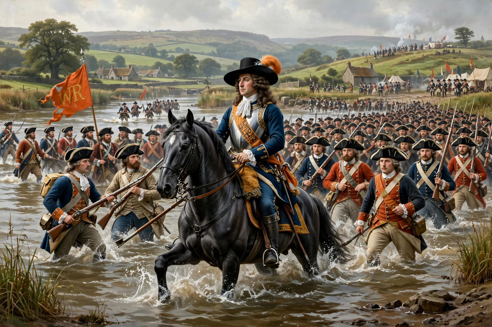

Battle of the Boyne

The Battle of the Boyne was fought on 1 July 1690 (Old Style) between the forces of the deposed Catholic king James II of England and Ireland and those of William III, the Dutch stadtholder who had assumed the English, Scottish and Irish thrones with his wife Mary II in the Glorious Revolution. The battle took place across the River Boyne near Drogheda in eastern Ireland and was the largest ever fought on Irish soil.
| Date | 1 July 1690 (O.S.) |
|---|---|
| Location | River Boyne, near Drogheda, Ireland |
| Result | Williamite victory |
| Belligerents | Williamites: Dutch Republic, England, Denmark and Protestant allies — Jacobites: Irish Catholics with French support |
| Commanders | William III; Duke of Schomberg † — James II; Earl of Tyrconnell; Duke of Lauzun |
| Strength | c. 36,000 — c. 23,500 |
The battle
William's army crossed the Boyne at several points. The main assault went in at Oldbridge, where the Dutch Blue Guards and Huguenot regiments forced the ford against determined Jacobite resistance; the veteran Duke of Schomberg was killed in the fighting. Diversionary crossings upstream convinced James that his flank was turned, and he withdrew his army in good order toward Dublin, abandoning the capital and soon afterwards Ireland itself, sailing for France.
Significance
The Boyne was not the most decisive battle of the Williamite War in Ireland — that was Aughrim a year later — but it became the most famous. Its anniversary is commemorated by the Orange Order on "the Twelfth" of July, a date arising from the calendar change of 1752, and the image of "King Billy" crossing the Boyne remains a central symbol of Ulster Protestant identity.